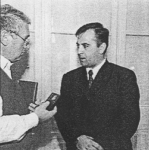

Se non si interviene, entro trentanni la parlata è destinata a scomparire
"Onorala auditore". È sfata questa allocuzione, chiara nel' l'intento, ma insolita, per noi, nell'articoluzìone, con cui si sono presentali all'uditorio i relatori al Terzo convegno internazionale sulle lingue in contatto intitolalo "Istroromeno ieri, Oggi e domani". All'appuntamento, organizzato dalla Facoltà di filosofia di Pola con il coinvolgimento dell'Associazione culturale istroromena "Andrei Glavina" di Trieste, erano presenti fra gli altri il sottosegretario di Stato d'i Bucarest, Viorel Badea, e l'ambasciatore a Zagabria, Constantin Ghirba, che ha letto un messaggio del presidente Costantinescu, a riprova dell'importanza che palesemente la Romania assegna a questa sua comunità "che è la più avanzata verso l'occidente d'Europa". Dopo un giorno di lavori a Pola, i partecipanti hanno visitato Valdarsa e Seiane (Žejane).
Se la forza sta nei numeri, per gli istroromenì la situazione si presenta poco incoraggiante, a giudicare dai dati che ci illustra il doti. Goran Filipi, preside della Facoltà di filosofia di Pola e dirigente i lavori del convegno. "A Scabici, per fare un esempio, vivono, alla lettera soltanto due abitanti, a Stankovci sei. Se si considerano anche coloro che sono in grado di comprendere ma non di esprimersi in istroromeno e tutti gli emigrati, il numero non può superare le 450 unità. Personalmente ne ho contati un centinaio in quel di Žejane e un centinaio nell'arca di Valdarsa. Un grosso problema per una maggior diffusione della lingua è derivato in conseguenza dei matrimoni misti e dal fatto che i bambini non la parlano. Molto più ferrati, sotto questo aspetto, sono gli abitanti di quest'arca che sono emigrati in America dove hanno mantenuto il linguaggio."
Quali risultano ì cognomi più diffusi al momenlo attuale?
"Nell'area di Žejane quelli maggiormente presenti sono quattro-cinque, fra cui prevalgono Sanković e Doričić. a Valdarsa. Belulović. Degli originali è rimasto ben poco, tanto che si potrebbe dire che sono ampiamente presenti fra la popolazione croata, come Katunarić e Licul, e ormai quasi scomparsi fra la popolazione da cui provengono, fatto che nel contesto comprova che quest'ultima un tempo qui era diffusa su un'arca molto più vasta. La riprova sta anche nelle tracce identificabili nella toponomastica istriana: si veda ad esempio il ripetersi della parola 'katun', che definiva un certo tipo di abitato. O ancora, nella parte meridionale di Veglia, nell'arca di Srkpčići, l'uccello viene definito con la radice romena 'puljić', comprovante, a mio avviso che nel loro movimento verso l'Istria sono passati da quelle parti.
Purtroppo gli andamenti attuali non inducono all'ottimismo. Se non ci saranno inversioni di tendenza, entro una trentina danni l'istroromeno non avrà più parlanti. Consola però il fatto che la comunità oggi mostra di volerlo salvaguardare. Pertanto, a mio avviso, volendo fare qualcosa in concreto, esso dovrebbe essere insegnato nella scuola quale lingua facoltativa (il riferimento va a Valdarsa perché se neppure a Žejane non c'è la scuola, la lingua risulta comunque meno minacciata, anche perché la gente del posto ha un'attività di relazione notevolmente più intensa) una-due volte la settimana, e questo, si badi, non solo agli istroromeni. ma anche ai croati, come avviene con l'italiano (se infatti fossero solo gli italiani a studiare il croato e non viceversa, il bilinguismo sarebbe 'unilaterale' e dunque di scarsissima utilità). Nel caso rumeno, in specifico, le possibilità di recupero e conservazione delia lingua sarebbero nulle. Non va inoltre sottovalutata l'importanza di una lingua che. seppur usata da un numero molto esiguo di persone, è ufficialmente una delle quattro varianti 'storiche' del romeno."
Vi sono altre isole linguistiche romene in Croazia?
"No, per quel che ne so. Ce ne sono invece in Serbia, In Vojvodìna a quest'etnìa è stato riconosciuto lo status di minoranza, al contrario di quei suoi componenti - e il numero è molto alto - che sono stazionati nell'area dì Majdanpek e Bor, dove vengono chiamati morlacchi. Dai miei contatti con essi, che sono relativamente intensi, so però che sono attivamente impegnati in tal senso."
Ci sono grandi differenze con la lingua parlata in Romania?
"La risposta è di necessità ambivalente. Semplificando dirò che se non conosci quella, non puoi capire questa gente. Non basta però: per capire devi conoscere di necessità anche il ciacavo. Il romeno 'vero' si è arricchito nel tempo di molti grecismi e turcismi, qui assenti, mentre qui l'idioma ha assorbito molti termini cìacavì e veneri ed è appunto questa diversità subentrata nel corso della storia che impedisce una comprensione completa fra i parlanti. Anche il lessico qui è relativamente ridotto, alla luce, pure, dell'assenza di una letteratura scritta. Il problema si pone pure nell'ambito della scuola. La lingua 'ufficiale' ha suoni che qui si sono persi per cui va definita la grafia."
Vi sono anche delle differenze in ambilo religioso: in Istria sono cattolici, in Romania in prevalenza ortodossi...
"Tutti gli scritti li danno per cattolici fin dall'arrivo. Si noti peraltro che in genere non si dichiarano romeni ma nei termini della popolazione circostante. A Žejane (si veda ii censimento del 91) si dichiarano in maggioranza croati, a Valdarsa prevale l'appartenenza regionale. Solo due-tre hanno optato per il romeno. Interessante notare che fra essi è emersa anche la tesi che si tratti di croati che vivevano in Romania e sono arrivati qui quale 'avanguardia' delle migrazioni: un'altra teoria asseriva trattarsi dei discendenti delle legioni romane e pertanto 'da sempre' qui presenti. Sono tesi confutate dalla scienza: a mio avviso la più sostenibile è quella deila migrazione nomade approdata qui passando per la Dalmazia. Si noti che i loro termini ciacavi sono di tipo più arcaico, assenti in Istria e quindi indubbiamente raccolti da questa gente 'lungo la strada". Anche oggi in Dalmazia gli anziani contano le pecore usando termini romeni. Ad es. dieci si dice zeice. Inoltre, è diversa anche la struttura della lingua: il romeno ad esempio non conosce il genere neutro nel senso classico, che qui è presente."
Quali frutti si attende da questo convegno?
"Le dirò innanzitutto che mi ha piacevolmente sorpreso la consisterne adesione di esponenti dei mondo della politica. Il fine primo era di dare un contributo agli studi su questo idioma. Dato però che c'è di mezzo una piccola comunità che necessita di reali sostegni, mi auguro che al momento del commiato avremo fatto qualche piccolo passo avanti sul piano concreto. Gli istroromeni di Valdarsa necessitano di forme organizzative indispensabili alla valorizzazione della lingua e delle tradizioni, a cui sono molto interessati.
Sono inoltre indispensabili forme di collegamento con Žejane finora assenti data la conformazione del terreno (sono divisi dal Monte Maggiore)."
Preso atto di quanto detto, non resta che sperare che, chi può e deve, si muova quanto prima per evitare che anche questa comunità e il suo idioma entrino a far pane di que patrimoni culturali - e sono tanti - scomparsi dalla faccia della terra. Un piccolissimo contributo in tal senso, si spera, dovrebbe venire dal simposio.
A Pola si studia il romeno
Fra le lingue straniere che s'insegnano alla Facoltà di Pola vi è anche il romeno. I corsi si articolano a due livelli: per principianti e per progrediti. Le lezioni vengono tenute da un lettore della Facoltà di filosofia di Zagabria.
Da Ciré bine a cirìbiri
Si dice istroromeni per definire una popolazione che oggi vive nella penisola istriana grossomodo in due territori distinti: intorno a Žejane e nell'area di Valdarsa. Il primo grosso interrogativo si affaccia già in relazione all'arrivo. Come e perché si mossero? Le teorìe sono diverse. La più accreditata è quella di genti nomade che giravano per i Balcani alla ricerca di pascoli per le sue greggi e che si sistemarono in parte nel territorio istriano che più volte era rimasto quasi privo di popolazione in seguito ai susseguirsi di varie pestilenze. Le "avanguardie" di queste migrazioni veteroromene sì sarebbero spinte fino al Friuli indotte anche dal fatto che le greggi erano numerose sicché in tempi relativamente brevi i pascoli si esaurivano. I primi arrivi in Istria risalirebbero al XII secolo. Anche oggi Valdarsa e l'area circostante presentano le caratteristiche dì abitato di pastori, non riscontrabili invece a Žejane.
Gli istroromeni sistematisi nell'area di Žejane, fino a lambire Abbazìa, vengono chiamati cicci. i ciribiri sono invece dislocati attorno alle sponde di quello che fu il lago d'Arsa. Data l'area montuosa che li divide e le conseguenti difficoltà nelle comunicazioni, i contatti sono stati pressoché inesistenti. lì nome cicci deriva, si presuppone da un toponimo locale di difficile identificazione. Ciribiri e nata invece dall'unione delle parole ciré bine che significano "stammi bene" e da cui con l'andar del tempo, con un processo di rotacismo, la n sì è trasformata in r.
Rațiu: matrice comune palese nelle favole Miličević: escluso ogni legame organico
Di contro a Miličević (vedi testo a lato) il dott. Emil Petru Rațiu (nella foto), romeno che vive in Italia, ha affermato che le favole istroromene presentano tutta una serie di somiglianze, fino ad arrivare alla piena identità, con quelle dacoromene per cui è assolutamente improprio parlare di casualità. Tale somiglianzà si basa sul prevalere degli elementi sovrannaturali, molto presenti nella favole dacoromene, e quindi sulla tipologia del personaggio, quasi sempre un giovane scaltro, un figlio minore di una grande nidiata, o una serva rimasta incinta che deve trarsi d'impaccio. In Istria l'elemento favolistico ha assunto poi vie autonome fino ad avere quali protagonisti il "buon soldato" che fa servizio a Pola dove viene gratificato dall'imperatore. Rațiu ha sottolineato il valore di racconti con cui di fatto questa gente ha espresso "l'amore e la morte, le prime parole e le ultime sofferenze".
Una voce discorde fra le tante è stata quella del prof. Josip Miličević, di Zagabria. Il "valore romeno" in questa gente (da lui chiamata "rumeri") deve essere a suo avviso decisamente declassalo. li linguaggio da essi usato, ha spiegato non può essere definito in altro modo che quale "linguaggio di famiglia" che presenta connotazioni etnografiche di scarsissima importanza. Lo stesso discorso vale per i racconti a cui si richiama la tradizione orale che "non presentano nessuna peculiarità" che si possa considerare specificamente romena, "nonostante che in genere fra i popoli balcanici sia presente una forte tendenza a raccontare". Quest'assenza a suo avviso sarebbe la testimonianza inconfutabile dell'inserimento integrale di questa comunità nell'ambiente istriano con la conseguente perdita degli essenziali attributi nazionali. Il professore ha sostenuto quindi che una comprova del suo ragionamento è venuta dalla ricerca atta a rinvenire fra gli istrorumeni oggetti aventi valore etnografico da lui effettuata per conto del Museo etnografico di Pisino: fra tutti quelli che egli ha avuto in mano, è stato categorico, nessuno presentava caratteristiche tali da poterlo inserire fra i reperti etnograficamente riconducibili a un'origine romena.
Per Bucarest valido il modello italiano
 Ai lavori del convegno ha presenziato il segretario di Stato rumeno, Viorel Badea, che dirige il Dipartimento per le relazioni con i romeni che vivono all'estero a cui abbiamo chiesto in che modo il suo Governo si propone di supportare l'attività degli istrorumeni.
"Noi abbiamo adottato l'anno scorso una strategia che si articola in dieci programmi che si propongono di sostenere la scuola, la lingua, e, specificamente anche una Fondazione per le biblioteche laddove vi sia una popolazione rumena. In questo momento cerchiamo di presentare agli istrorumeni una specie di accordo, direi quasi una partnership, per la conservazione di questo idioma. Dico idioma perché per alcuni è lingua vera e propria, io però sarei propenso a definirlo un dialetto, come lo è il friulano o il siciliano. Non possiamo parlare di grande comunità - perché una tesi di questo genere mistificherebbe la realtà - ma l'idioma, data la sua struttura molto interessante, va conservato.
In altri termini, qui c'è un certo numero di istrorumeni, portatori di una tradizione, che si esprime anche soprattutto attraverso la parlata, che va mantenuta e conservata. È per tale motivo che proporremo questo accordo con cui noi, come Stato, c'impegniamo ad appoggiare tutto ciò che ha una determinata valenza per la conservazione della lingua e delle tradizioni. È una proposta in cui intendiamo coinvolgere lo Stato croato anche alla luce della questione dì reciprocità nei confronti della minoranza croata in Romania che gode di quelli che per me sono diritti normali e ovvii e che dovrebbero essere fruibili in tutti i casi simili.
Il nostro dipartimento è "giovane": funziona solo da un anno e fra i modelli che segue e a cui s'ispira c'è anche quello italiano. Proprio a Roma le sue caratteristiche mi sono state illustrate dal sonosegreiario Patrizia Toia. Anche il modello ungherese è a mio avviso molto vivo ed attivo e funziona molto bene. Elaborando la variante più idonea alle nostre necessità cercheremo di trovare i modi più validi per venire incontro alle necessità di tale comunità."
II rumeno in municipio
Nel 1930 nel comune di Valdarsa, sia pure limitatamente al piano locale, l'istroromeno diveniva lingua ufficiale, come riporta una notizia ritrovata dai ricercatori nel Fondo Tagliavini che oggi fa parie della Biblioteca di Udine. "Ho introdotto in Ufficio l'esclusività del rumeno così tutti gli abitanti del Comune, anche quelli che usualmente a casa non parlano il rumeno, si esprimono, quando vengono in Municipio in lingua rumena oppure in quella italiana" scriveva il vicepodestà Fabio Branca" aggiungendo in un poscritto: "Ho imparato a parlare questo dìalctio e sono contentissimo".
(Dalla relazione del dott. Gheorghe Zbuchea)
No, el cicio xe anche per barca
Diversa e interessante per molteplici aspetti è stata la comunicazione letta ai convegno dal dott. Ervino Curtis, di Trieste, presidente dell'Associazione ilalo-romena Decebal, in cui ha sottolineato la necessità di dare piena dignità, nella multiculturale Istria, a "questa cultura minore che è una testimonianza storica e culturale," che si è arricchita delle altre culture, pur conservando la memoria storica delle sue origini.
Egli pertanto si è proposto di provare come la società istroromena si sia integrata nel territorio e Io abbia conservato e valorizzato. Analizzando l'aspetto economico Curtis (che è occupato presso l'autorità portuale del capoluogo giuliano e che nel colloquio avuto con chi scrive queste righe, si è definito, con immeritata modestia, "un dilettante") ne! suo scritto ha "corretto" il tradizionale detto (triestino, ha specificato) "cicio no xe per barca" con cui s'intendeva affermare che l'ambito economico degli istroromeni, le loro professionalità ed esperienze non erano legate alle attività che più si facevano sulla costa istriana. Seppur non decisamente offensivo, il termine neppure sviluppa un concetto positivo sugli istroromeni poiché esprime la "non abilità" del ciccio a un certo lavoro. Nello stesso tempo però conferma il fatto che molti cicci abbiano provato ad andare per barca.
Ricorda infatti lo storico Pietro Kandler che "il cicio davasi sovratutto ai trasposto de! sale dall'Istria marittima al carnio" commerciando però anche in carbone, doghe, lavori in legno, lana, aceto, trasferendo in quest'attività la conoscenza delle strade acquisita al seguito delle greggi. Altri documenti li indicano proprio fra i marinai su navi italiane, spesso come fuochisti. Altre ricerche ancora dicono che lavoravano a Fiume, nel porto, nei cantieri e nelle carpenterie di ferro ed anche ad Abbazia.
Naturalmente le loro specialità, ben conosciute da tutti, sono sempre state la pastorizia e conscguentemente la produzione di formaggi e la produzione del carbone vegetale. Sono tutte testimonianza che certificano una certa vivacità imprenditoriale degli istroromeni adattati ed integrati nella situazione istriana.
Tale sviluppo è stato bloccalo anche da crisi economiche significative. La prima con la conquista napoleonica, la seconda con l'avvento della prima guerra mondiale, che hanno indotto i cicci a praticare il contrabbando ed il brigantaggio su quelle strade, in parte da loro stessi costruite, considerate da secoli un bene comune degli abitanti deli'Istria ed improvvisamente ripartite in diverse entità statali. Lo stesso Kandler, criticando le repressioni poliziesche, considera queste "straderie" più una braveria che un delitto e ritiene che i cicci siano anche un comodo capro espiatorio perché invece "l'educazione di un popolo abbandonato del tutto, il promuoverne l'economia, sarebbe stalo miglior modo che il terrore disgiunto da giustizia".
Aspetto fisico: mentre un altro ricercatore, il prof. Urbas - ricorda Curtis - dice trattarsi di una popolazione di struttura fisica forte e sana. Kandler rileva che non hanno avuto mai un medico o spezierie ma neppure malattie.
Trattando l'aspetto sociale, la comunicazione si è soffermata sul fenomeno dei trovatelli ricordato dal ricercatore romeno loan Maiorescu che. appurato che nel 1857 quasi 300 trovatelli dell'Istituto dei poveri di Trieste sono raccolti presso famiglie istroromene afferma che in nessuna parte deli'Istria la gente è invogliata di occuparsi con l'educazione come i romeni che crescono e raccolgono i frutti dei plutocratici triestini. La posizione dei luogo lontano da Trieste e che è come un nascondìglio isolato. La costituzione fisica, forte e sana di questi romeni, le loro belle caratteristiche, il loro spirito vivace ed ingegnoso sono gli elementi che fanno sì che siano affidati loro questi bambini. Ricorda infine che di questi trovatelli, la cui piccola retta era pagata dall'istituto triestino solo fino all'età di 10 anni la maggior parte di loro rimangono tra i romeni senza che vengano a conoscenza mai della loro origine.
Aspetto ecologico: è stato assai poco considerato che le loro attività hanno garantito l'equilibrio dell'ecosistema in quella Cicceria che uno scritto di Loris Dilena definisce un 'oasi incontaminata la cui ricchissima fauna e flora sono sopravvissute proprio grazie agli stagni artificiali che venivano fatti dai cicci per i loro greggi in una regione povera di acqua, rispettivamente a seguito di una azione molto attiva di pascolamento esercitata su superaci strappate al bosco.
Un altro ricercatore. Luigi Perentin, conferma come le loro attività economiche non abbiano alterato negativamente l'ambiente, perché, a proposito delle carbonaie osservavano le leggi e tramite l'esperienza rispettavano il legname vivo del bosco ben sapendo che le ceppale rinascono dopo 3 anni e il bosco torna ad essere sfruttabile a carbone dopo 15.
Concludendo, Curtis ha affermato che poche migliaia (ora qualche centinaio) di persone "non possono che essere guardare dai studiosi e dagli storici con simpatia ed interesse come un laboratorio culturale ed una ricchezza da coltivare e preservare. Dei 6.600 idiomi parlati nel mondo, infatti, 3.000 sono destinati a morire tra un secolo, prendiamo perciò l'impegno davanti alla storia di salvare l'istroromeno".
II ruolo di Glavina
Nei preparativi del Convegno sugli istroromeni è stata attivamente coinvolta pure l'associazione "Andrei Glavina" con sede a Trieste, a cui aderiscono una cinquantina di istroromeni. L'attività di Glavina, chiamato "l'apostolo degli istroromeni della Valdarsa" è stata essenziale per questa comunità. Nel 1902, giunto per la seconda volta fra gli istroromeni. il prof. Teodor Burada, dell'Università di Jassi, portò con sé indietro il dodicenne Glavina. Il giovane studiò con prestigiosi insegnanti in diversi centri romeni e, tornato a casa, si dedicò completamente all'educazione dei compaesani. Raccolse le testimonianze della loro lingua nei racconti, proverbi e vocaboli in uso e pubblicò nel 1905 a Bucarest un "Calendaru lu Rumeri in istria" ossia un piccolo almanacco contenente le principali preghiere, raccontini e. in appendice, un minuscolo vocabolario. Maestro a S.Domenica d'Albona fino al 1918, fu poi commissario prefettizio. podestà e maestro elementare nella scuola di lingua romena. Morì a Pola nel 1925 a soli 44 anni d'età. La sua attività fu protesa essenzialmente all'apertura di una scuola romena a Valdarsa. Effettivamente, nel giugno del 1921, nel corso di una cerimonia a Bucarest. l'ambasciatore italiano annunciò l'avvenuta apertura delia scuola. Morto Glavina. l'insegnamento si spense.
Nel sentir parlare quell'uomo provai una fortissima emozione...
Lamentando la scarsa conoscenza che si ha degli istroromeni, Ervino Curtis ricorda che la parlata di questo popolo si articola attraverso quattro lingue (che per qualcuno però sono solo dialetti, precisa), ossia: il dacoromeno, che si parla nella Romania attuale; il meglenoromeno, usato dai romeni che vivono in territorio greco nell'area sovrastante Salonicco: l'arumeno o macedoromeno, parlato nell'Epiro e nella Macedonia e l'istoromeno. Tutti i romeni, ossia 23 milioni di persone di quest'Europa, sanno che la loro lingua è divisa in quattro parti di cui una è l'istroromeno. La conoscenza però si ferma qui.
Nel '91 a Fiume per un convegno, per conoscere da vicino questa realtà, si recò a Žejane. "Conosco diverse lingue, fra cui il rumeno, però, mio malgrado, non una parola di croato o sloveno. Arrivato a Žejane, in un'osteria trovai un quarantenne del posto. Cercando di comunicare, tentai con il romeno, egli mi rispose nel suo dialetto e ci capimmo senza difficoltà. Non posso esprimere l'emozione che provai."
Mario Simonovich
April 15, 2000
© 2000 Panorama